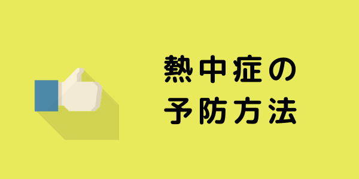
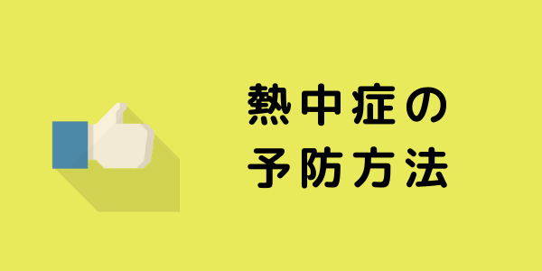

熱中症は所詮ただの夏バテ…
もしかしてそんな風に考えていませんか？
熱中症にかかった状態で放置すると
体温調節ができず死亡することもあります。
正しい知識があれば救えたかもしれない…
そんな思いをする前に、このサイトで少しだけ
勉強してみませんか？
それでは早速教育の流れについて見てみましょう
Step1：教育の概要
この章では熱中症予防教育が必要な背景等について、学習します。厚生労働省が公表している「職場における熱中症による死傷災害の発生状況」等のデータを確認しながら、順序だてて説明してきます。年間の熱中症発生件数をあなたは知っていますか？Step2：熱中症の症状
熱中症になった時に見られる症状について、学習します。熱中症には、体温の調節はもちろん「体液の調節」が大きく関わっています。特にナトリウム・カリウム等の塩分の摂取が重要であることは、皆さんもご存知だと思います。では何故必要なのか？説明できますか？熱中症予防対策をとる上で、発症するメカニズムを学ぶことは最も重要なことでしょう。Step3：熱中症の予防方法
これまでは熱中症予防対策を実施する上でベースとなる知識を学んできました。この章では「現場での予防対策」等、より具体的で、すぐにでも実施可能な対策を学びます。消防の現場でも用いられている「プレクーリング」、あなたはこの言葉を知っていますか？Step4：緊急時の措置
いくら対策をしても、作業者がそれを無視した行動を取れば、熱中症になる可能性は十分あります。そんな時、どんな対応を取ればいいでしょうか？初期の対応を誤れば、あなたの責任が問われます。とにかくこれだけは覚えておいてください。「迷ったら即救急車！自分で判断しない！」Step5：事例紹介
厚生労働省は私達に様々な情報を与えてくれます。他事業所の情報を確認して、自分の職場と照らし合わせてみましょう。きっと足りない所を見つける手掛かりになるはずです。